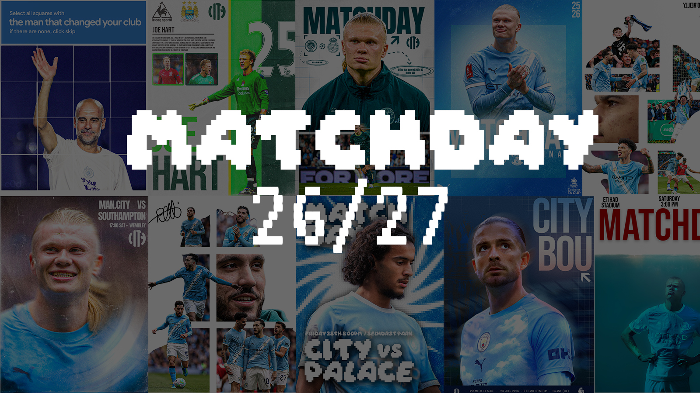
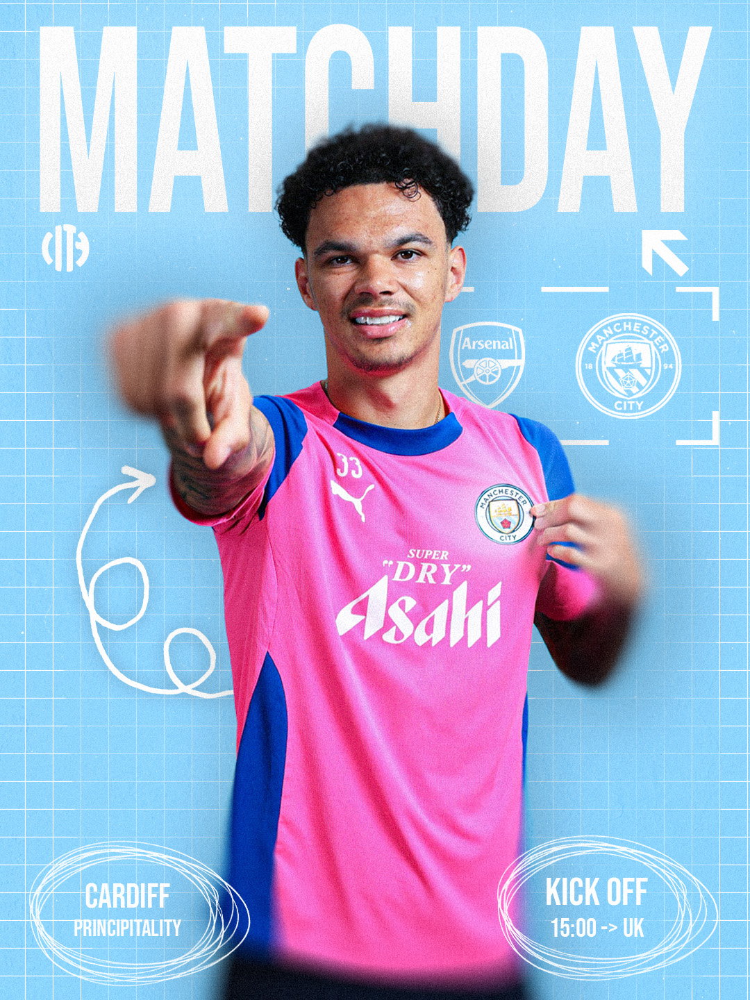
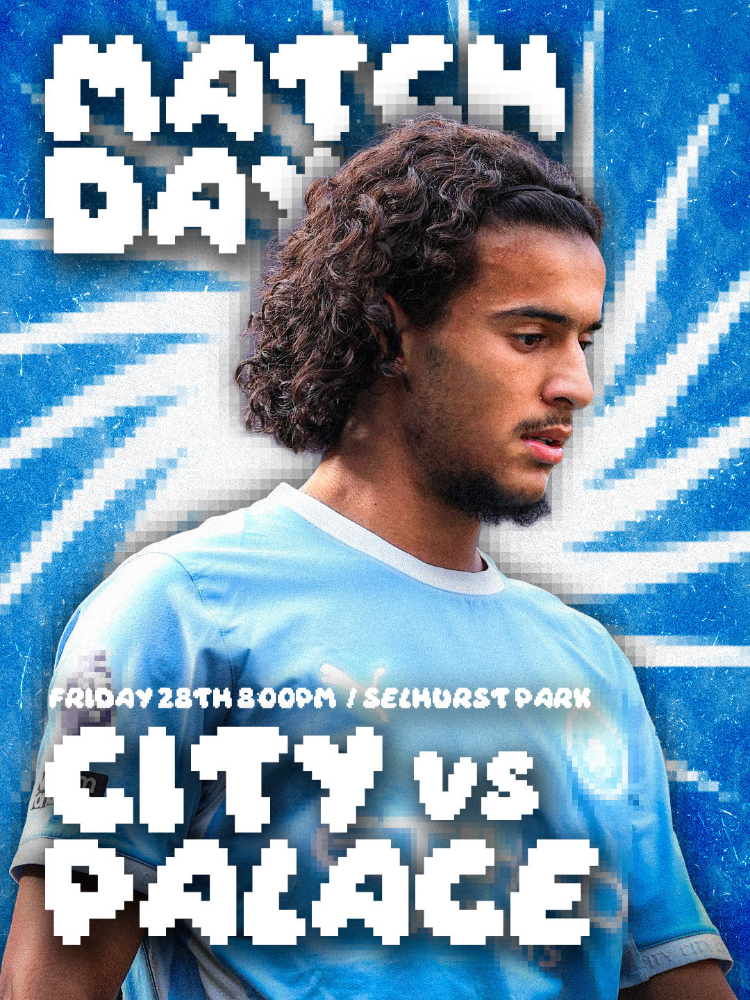
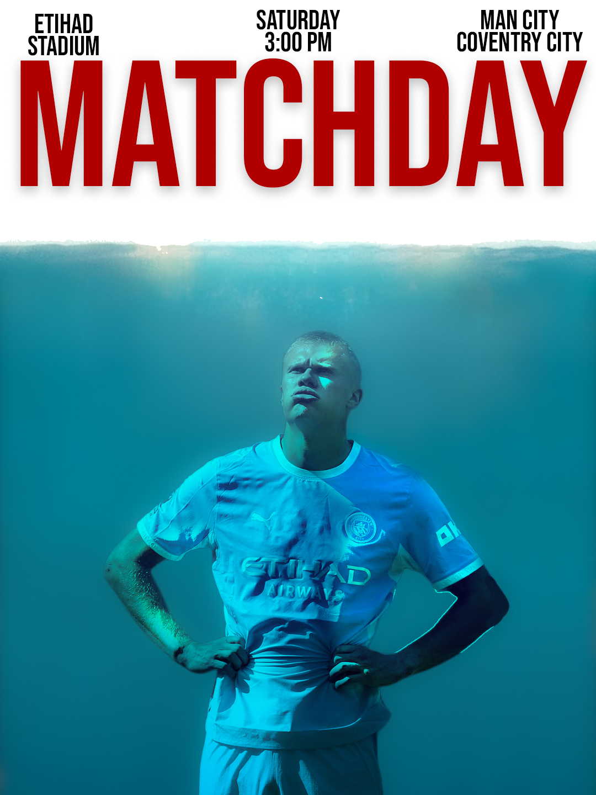
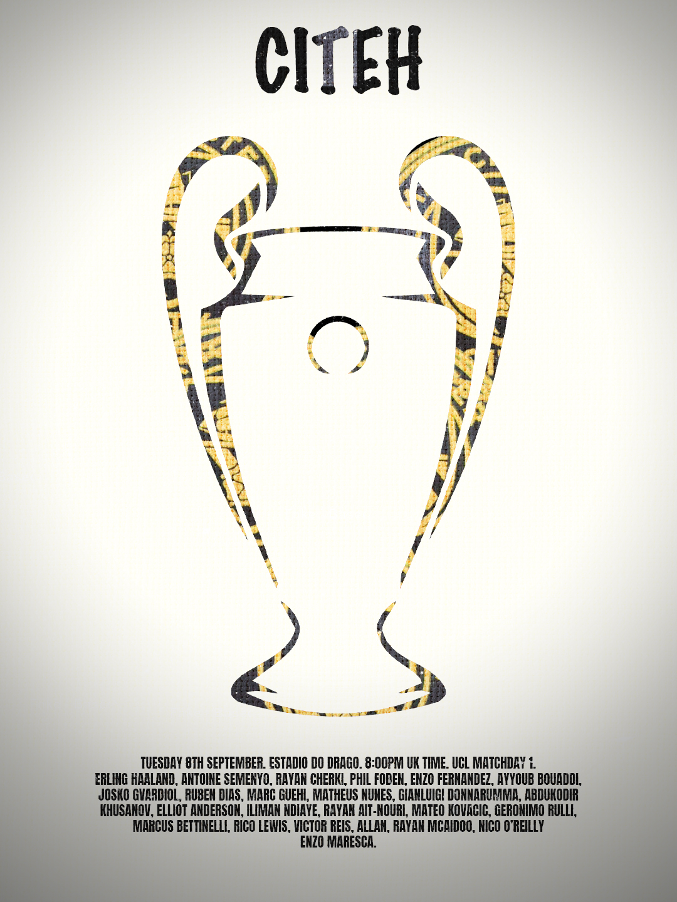
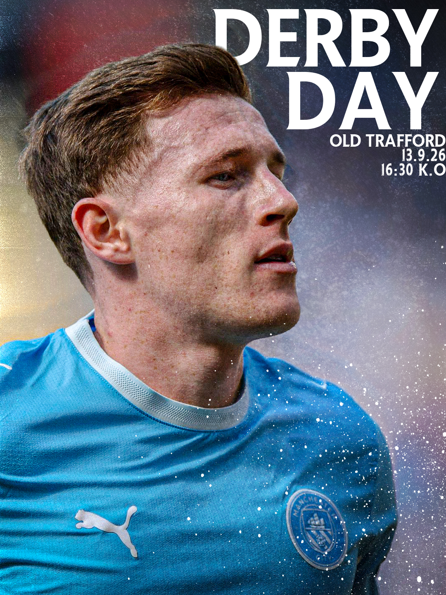
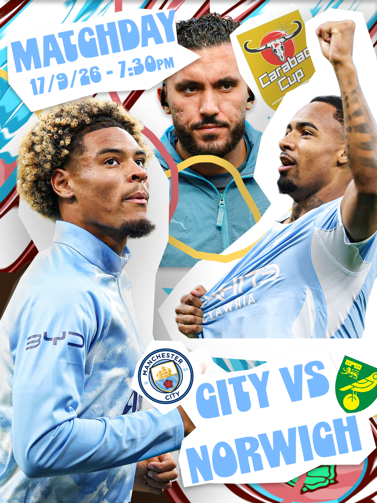

Matchday Posters: Manchester City
I have challenged myself to create a poster for every single match Manchester City play in the 26/27 Football Season

- PurposeChallenge Myself
- RoleYour role
- Year2026
- ToolsPhotoshop
At the start of the 2026/27 Football Season, I challenged myself to create posters for every game Manchester City play; these posters could theoretically be used for their social media.
For each poster, I am trying to use as many different styles as I can, as I don't want them looking too similar to each other.
Poster's Completed - 7/68* ( * = as they could be knocked out of any competitions )






